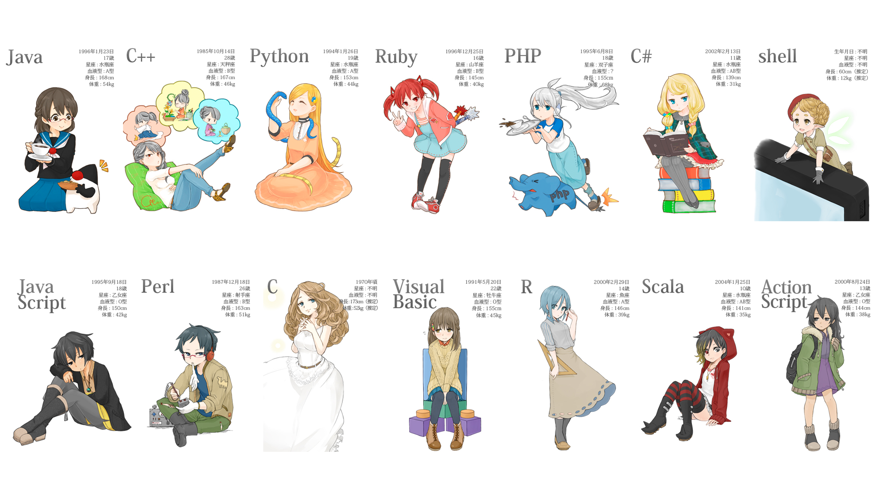
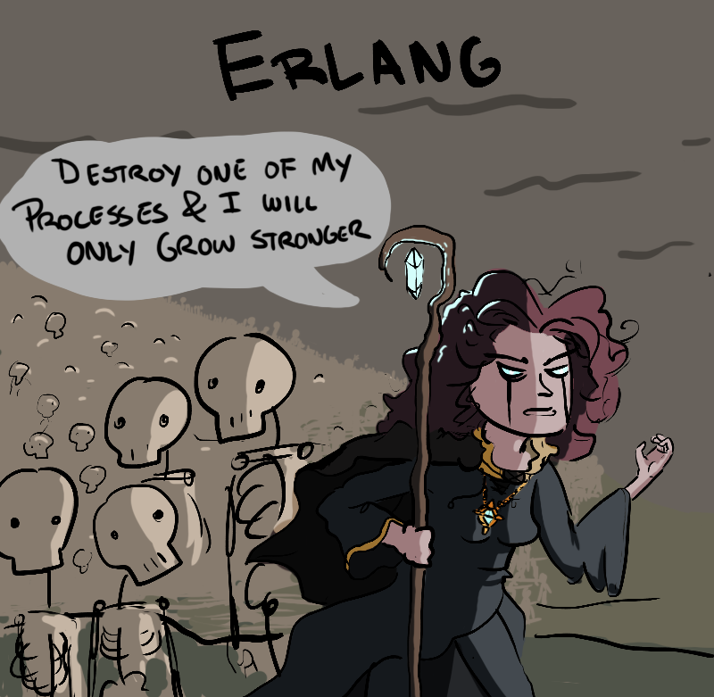
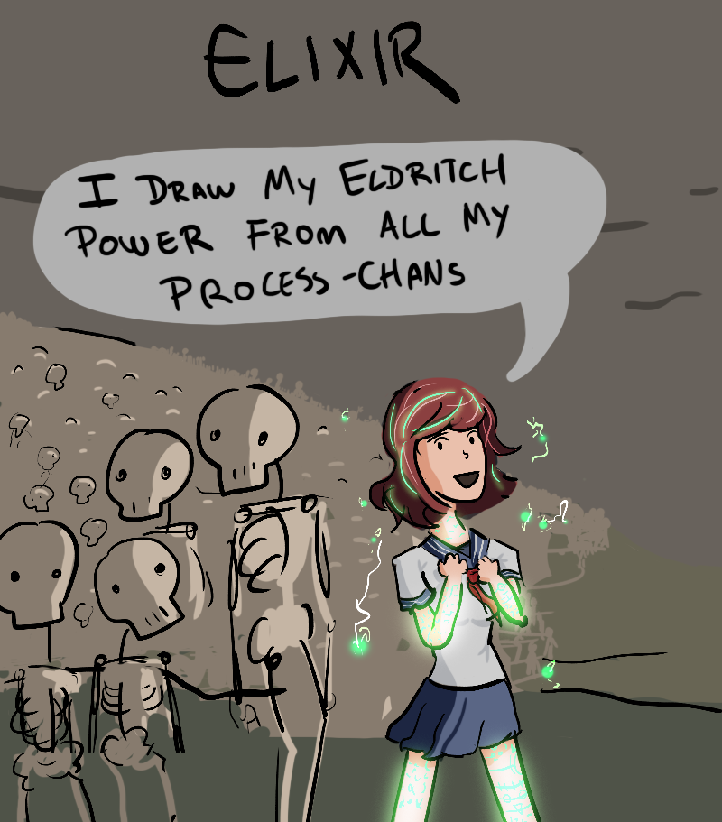

.center[ ### Languages  ] --- .center[ ### Not unique? ] - **immutable data**: *ML, Miranda, Haskell, Lisp dialects* - **actor runtime model**: *Smalltalk, D, Scala (AKKA), Cloud Haskell* - **message-based communication**: *Smalltalk* - **pattern matching**: *ML, Prolog, Haskell, Scala* - **syntax**: *Prolog, Ruby* - **powerful meta-programming**: *Lisp dialects* - ... - **runtime system (Erlang VM)**: no one has built anything like this yet .center[ <img src="img/not-bad.jpg" width="30%"> ] --- .center[ ### Ericsson ] - Founded by Lars Magnus Ericsson in 1876 - Bell Labs could not compete in Scandinavia - Computerized telephone switches since **1954** (AKE/AXE/AXD series) .center[ <img src="img/Lars-Magnus-Ericsson.jpg" width="20%"> <img class="small-margin" src="img/ericsson-logo.png" width="30%"> <img src="img/Ericsson-phone.jpg" width="20%"> <img src="img/Ericsson-mobiles.jpg" width="40%"> ] --- .center[ ### Telecom requirements ] - Handling a very large number of concurrent activities - Systems distributed over several computers - Continuous operation over several years - Software maintenance (reconfiguration, etc.) without stopping the system - Strict reliability requirements - Fault tolerance both to hardware failures and software errors .center[ <img src="img/cables.jpg" width="55%"> ] --- .center[ ### Erlang ] - PLEX = Fortran + Macro Assembler (since 1970) - Berkeley introduced UNIX 4.2 BSD, which can run on various architecures - Erlang = Ada, EriPascal, Chill, PLEX, Euclid + ML, Smalltalk, Prolog - Erlang meta-interpreter in Prolog by **Joe Armstrong** (1985), own VM created by **Mike Williams** in C (1990) .center[ <img src="img/PLEX-Erlang.png" width="70%"> ] --- .center[ ### Nine Nines ] .left-column[ <img src="img/AXD301-rotated.png" width="130%"> ] .right-column[ - In 1998 was announced AXD301, 10-160 Gbps ATM switch - Source code contains 1.5M lines of Erlang (main complex control logic) and 0.5M lines of C/C++ (device drivers) - Designed from scratch in less than 3 years - One of the customers was British Telecom (the largest voice ATM station in the world) - During trial period (first 5 years) only 1 minor issue occurred - **99.9999999% reliability (downtime is 31 ms per year)** - Nine nines became a synonym of Erlang and symbol of its reliability, currently even there is [organization](https://ninenines.eu/) with this name ] --- .center[ ### Concurrency vs parallelism ### ? ] --- .center[ ### Concurrency vs parallelism <img src="img/concurrency-vs-parallelism.png" width="80%"> ] --- .center[ ### Concurrency vs parallelism <img src="img/concurrency-parallelism-joe.jpeg" width="80%"> ] --- .center[ ### Nginx vs Apache ] .left-column.center.middle[ <img src="img/nginx.png" width="100%"> <img src="img/apache.png" width="100%"> ] .right-column.center.middle[ <img src="img/nginx-apache-req.png" width="88%"> <img src="img/nginx-apache-mem.png" width="88%"> ] --- .center[ ### NodeJS vs Haskell ] .left-column.center.middle[ <img src="img/nodejs.png" width="116%"> <img src="img/haskell-98.png" width="100%"> ] .right-column.middle[ ```javascript require("./examples/js-server.js")() // check webpage http://localhost:3000 (() => {for (i = 0; i <= 1000000; i++) {console.log(i)}})() // check webpage http://localhost:3000 while loop is executed ``` ```haskell stack new haskell-server yesod-simple --resolver lts-11.22 cd ./haskell-server/ stack ghci import Control.Concurrent forkIO main -- check webpage http://localhost:3000 ("warp" webserver) mapM_ print [1..1000000] -- check webpage http://localhost:3000 while loop is executed ``` ] --- .center[ ### Concurrency vs parallelism ] .left-column[ <img src="img/ruby-chan.jpg" width="120%"> ] .right-column[ - True parallelism: **Java, C++, Fortran** - real UNIX threads are heavy - requires very high developer skill - overhead for processes sync and management (semaphores, mutexes etc) - race conditions, deadlocks - Concurrency: **JavaScript, Lua, Python, Ruby** - actually, only one UNIX thread for all - concurrent apps still can have problems with race conditions - one fat concurrent task can affect all application ] --- .center[ ### Erlang VM ] ```elixir mix phx.new elixir_server --no-webpack --no-ecto cd ./elixir_server nano ./config/config.exs # put "server: true" setting mix deps.get && mix compile && iex -S mix # check webpage http://localhost:4000 ("cowboy" webserver) Enum.each(1..1000000, &IO.puts/1) # check webpage http://localhost:4000 while loop is executed ``` .center[ ] --- .center[ ### Schedulers Erlang/OTP 21 [erts-10.0.8] [source] [64-bit] **[smp:4:4]** [ds:4:4:10] [async-threads:1] [hipe] [dtrace] (SMP = Symmetric Multi-Processing) ] .left-column-big[ <img src="img/schedulers.png" width="100%"> ] .right-column-big[ - assigns work to worker - maximizes throughput and fairness - minimizes response time and latency - garbage collection - memory management ] --- .center[ ### Schedulers ] ```elixir iex -S mix :observer.start Enum.each(1..1000000, &IO.puts/1) # check Load Charts Enum.each(1..10000, fn _ -> spawn fn -> Enum.each(1..1000000, &IO.puts/1) end end) # check webpage and load charts (10000 processes!!!) ``` .center[   ] --- .center[ ### Cooperative vs Preemptive ] - Cooperative scheduling - tasks cooperation is needed for context switching - task should explicitly release thread control - implemented in C++ ([CAF](https://actor-framework.org/)) and in almost all other runtime systems - Preemptive scheduling - can preempt (interrupt, pause) and resume tasks on its own will - based on process priority - based on process reductions - implemented in modern operating systems (Mac, Linux, Windows) - ... and in Erlang VM (native implementation without libraries!!!) *Note: Golang, Python, Ruby, NodeJS and other runtimes are supposed to be preemptive, but they are really not* 😞 *(look at NodeJS example above)* --- .center[ ### Schedulers configuration ] - preemptive sheduler complexity is hidden from developer - some things can be configured if really needed - happened **0 times** in my career `¯\_(ツ)_/¯` (defaults are good) ```elixir iex --erl "+S 16:8" :erlang.system_info(:schedulers) # 16 :erlang.system_info(:schedulers_online) # 8 :erlang.system_flag(:schedulers_online, 10) :erlang.system_info(:schedulers_online) # 10 spawn fn -> :erlang.process_flag(:priority, :high) end ``` --- ``` Shared Heap Erlang Process Memory Layout +--------------------------------+ +----------------------------------+ | | | | | | | PID / Status / Registered Name | Process | | | | Control | | | Initial Call / Current Call +----> Block | | | | (PCB) | | | Mailbox Pointers | | | | | | | +----------------------------------+ | | | | | | | Function Parameters | | | | | Process | | | Return Addresses +----> Stack | | | | | +--------------+ | | Local Expressions | | | | | | | | | +------------+--+ | +-------------------------------+--+ | | | | | | | | | | | +-------------+--+ | | ^ v +----> Free | | | | | | | | | Space | | | | +--------------+-+ | +--+-------------------------------+ | +-+ | | | | | | | +-+ | Refc Binary | | | Mailbox Messages (Linked List) | | +-+ | | | | | +------^---------+ | | Compound Terms (List, Tuples) | Process | | | | +----> Private | | | | Terms Larger than a word | Heap | | | | | | +--+ ProcBin +-----------+ Pointers to Large Binaries | | | | | +--------------------------------+ +----------------------------------+ ``` --- .center[ ### Garbage collectors ] - *Reference Counting* for global shared heap - Personal *Generational Copying* GC for **every** process - divides the heap into two segments: young and old generations - if an object survives a GC cycle the chances of it becoming garbage in short term is low - it reduces unnecessary cycles over the data which have not become garbage yet. .center[ <img src="img/gc.gif" width="50%"> ] --- .center[ ### Generational GC scenario ] 1) `Spawn > No GC > Terminate` (**min_heap_size** is not achieved) 2) `Spawn > Fullsweep > Generational > Terminate` - Fullsweep (because no separation between objects yet) - switches to Generational and remains on it 3) `Spawn > Fullsweep > Generational > Fullsweep > Generational > ... > Terminate` - can switch back if **fullsweep_after** achieved: `:erlang.process_info(pid, :garbage_collection)` - can switch back if Generation GC cannot collect enough memory - `:erlang.garbage_collect(pid)` can be called manually 4) `Spawn > Fullsweep > Generational > Fullsweep > Increase Heap > Fullsweep > ... > Terminate` - when Fullsweep cannot collect enough memory --- .center[ ### Erlang VM *Erlang/Elixir languages perfection is questionable, but Erlang VM perfection is absolute* ] - Unique 100% (without any exceptions) preemptive scheduling - Unique per-process GC - It is operating system inside operating system .left-column-big.center[ ### Erlang VM What to build? ] .right-column-big.center[ ### Other runtime What to build? How to build? How to optimize? ] --- class: center, middle # Thanks ### [back to index](index.html)